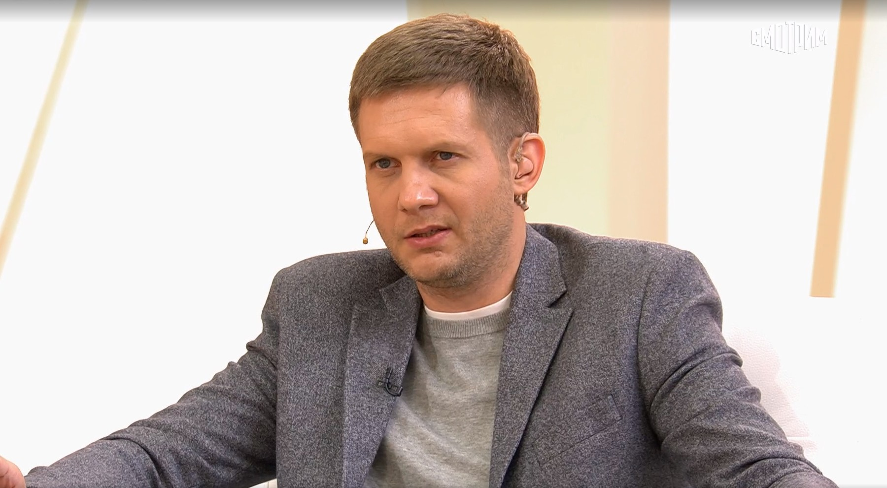

«Судьба человека». Россия-1.
Православие как государственная идеология.

3 декабря 1981 года. Актёрская карьера — снимался в кино и сериалах в 2000-е. Переход в телеведущие. Публичное воцерковление стало точкой изменения карьерной траектории — и одновременно стратегическим активом в государственной медийной системе.
Запускает ток-шоу «Судьба человека» — разговоры с гостями об их жизни, испытаниях, вере. Формат мягкий, эмоциональный. Под оберткой личных историй — воспроизводство государственных нарративов: патриотизм, жертвенность, православие как основа идентичности.
Становится генеральным директором православного государственного телеканала «Спас». Канал финансируется государством и РПЦ. Корчевников строит медиаплатформу, где религиозный авторитет используется для легитимизации государственной политики.
Активно участвует в создании нарратива «святой войны» против Украины. В программах «Спас» война представляется как духовная миссия — защита православной цивилизации от «безбожного Запада». ЕС вводит персональные санкции. Факт
Корчевников ведёт «Время покажет» на Первом канале — ежедневное ток-шоу, где война объясняется через призму православной эсхатологии. В 2024 году выпустил программу, в которой назвал Украину «территорией духовного распада». После курского прорыва вышел с выпуском «Испытание веры» — где военные неудачи России интерпретировал как «Божье испытание, которое Россия пройдёт». Его аудитория — верующие, для которых религиозный нарратив заменяет политический анализ.
К трёхлетию войны Корчевников выступил с программным заявлением: «Эта война — не политическая, это война духовная, и в духовных войнах не бывает компромиссов». Его образ «православного воина» транслируется через оба канала — Первый и «Спас». Переговоры с Западом он называет «искушением», от которого Россия должна устоять. Один из немногих пропагандистов, кто открыто отвергает любую дипломатию как греховный компромисс. Интерпр.
«Судьба человека» — шоу о личных историях. Слёзы, признания, трансформации. Эмоциональная открытость создаёт доверие, которое потом используется для трансляции государственных нарративов. Зритель не замечает политического послания за слезами.
Телеканал «Спас» финансируется как государством, так и РПЦ. Корчевников строит медиапространство, где граница между религиозным и государственным исчезает. «Батюшка сказал» и «Путин сказал» — одна система авторитетов.
Война против Украины в дискурсе Корчевникова приобретает статус священной. Это снимает любые моральные вопросы: «священная война» не может быть неправедной. Жертвы оправданы высшей целью.
Корчевников — один из самых молодых персонажей этого архива и ориентирован на более молодую аудиторию, чем большинство коллег. Привлекательная внешность, понятный язык, социальные сети — новый формат православной пропаганды.
«Корчевников представляет новое поколение российских пропагандистов: медийно грамотных, внешне привлекательных, использующих религиозный язык для государственных целей.»
«Использование православия для обоснования войны против Украины — государства с многовековой православной традицией — является богословски несостоятельным и политически цинично.»
«"Спас" под управлением Корчевникова превратился из религиозного канала в подразделение государственной пропаганды с православной символикой.»
Все утверждения в данном досье основаны на открытых публичных источниках. Факты, отмеченные Факт, имеют прямые первичные источники. Отмеченные Интерпр. — авторская интерпретация задокументированных событий.